imagining
Worlds
&building
Dreams
it's never too late to learn something new
3
2
1
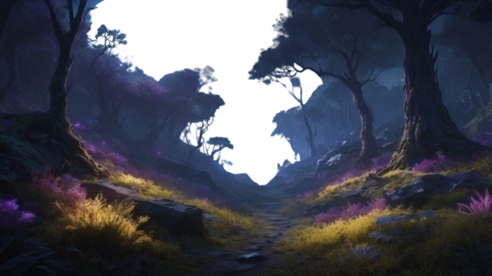
it's never too late to learn something new
Combining styles, tools and ideas. Learning by doing. Doing cause it's fun.
Invite THREE.js, WebGL and GSAP to work on one project ? Many will say it's way to much - They would most probably be correct ...but exploring them altogether while watching laptop to turn red - priceless.
explore works
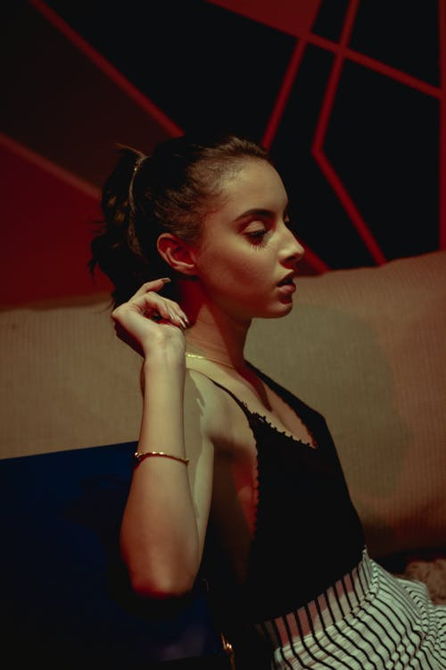
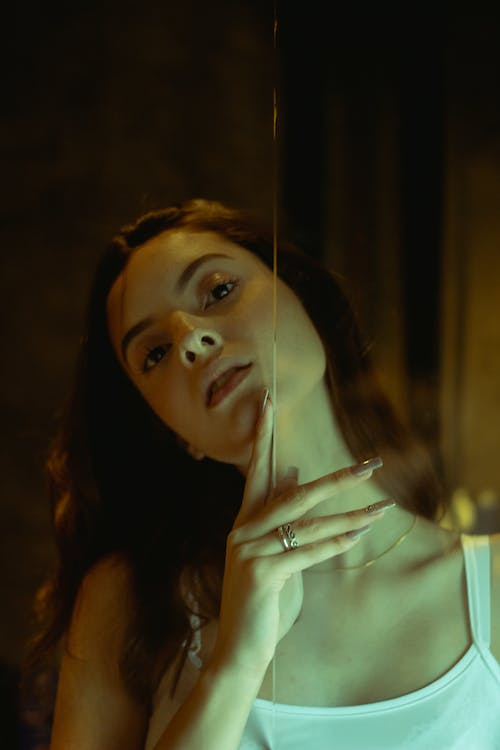
This series is excellently showing that ordinary portrait photography still can be inspiring for you.
Check the shots of beautiful Caroline in hat with red and green lights.
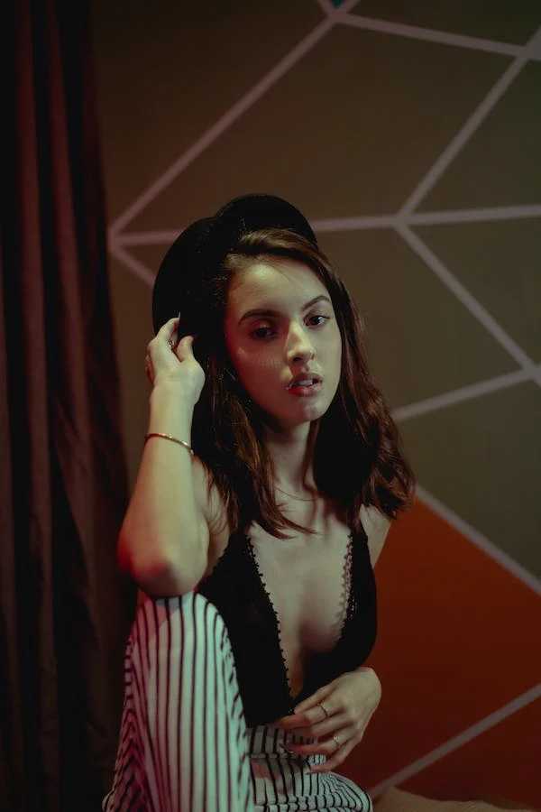
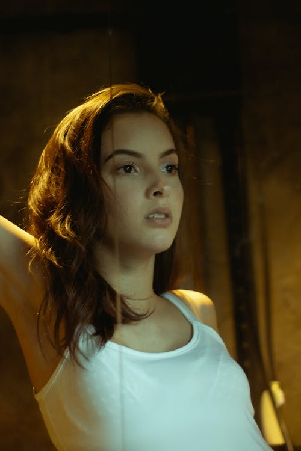
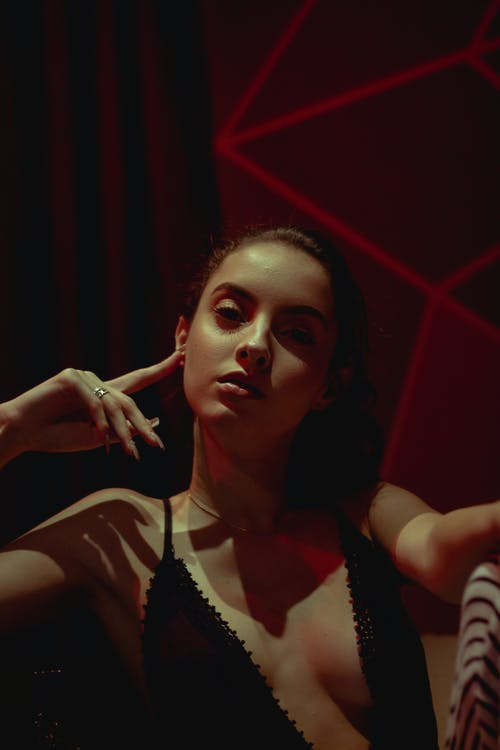
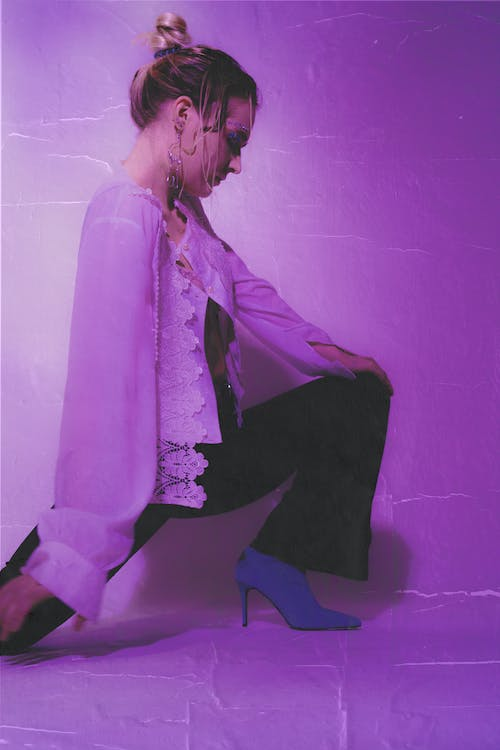
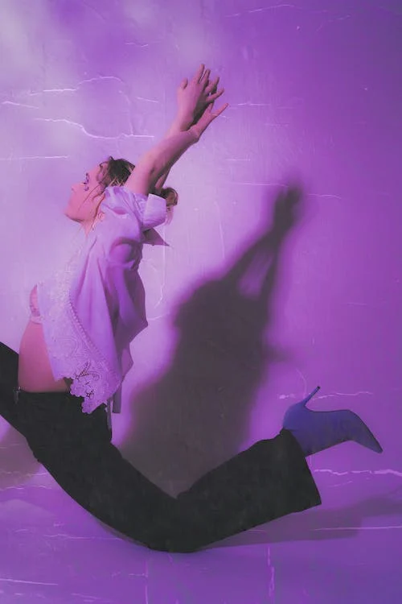
Beautiful dance of Hanna in neon ligths with retro effect. Pink lights, pretty women and sensuality.
Inspiring vibes and invisible beautiful soul on this shots.
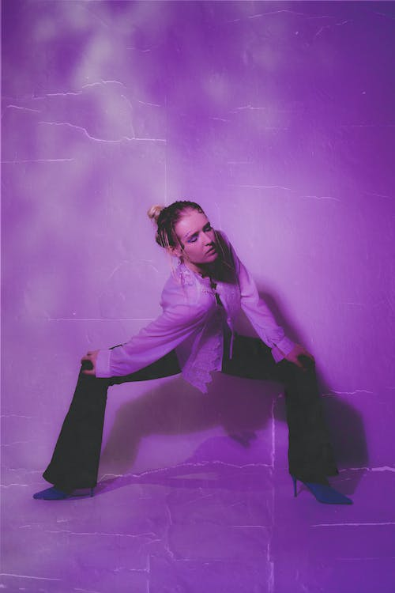
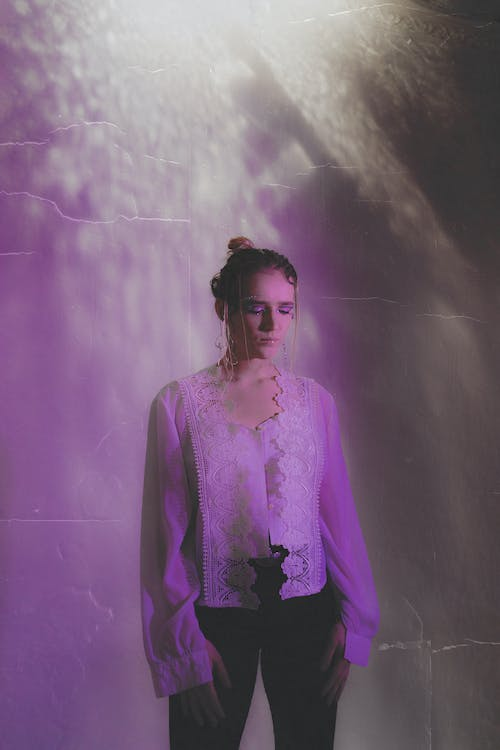
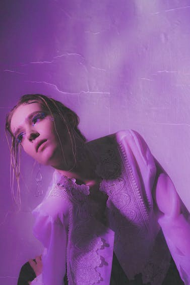
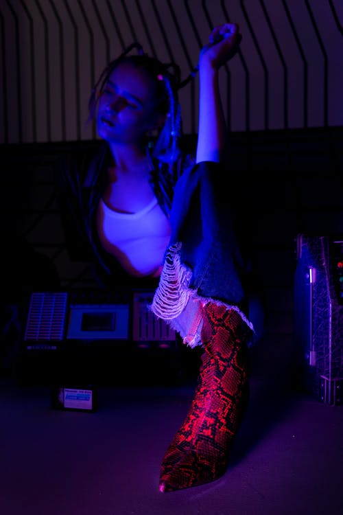
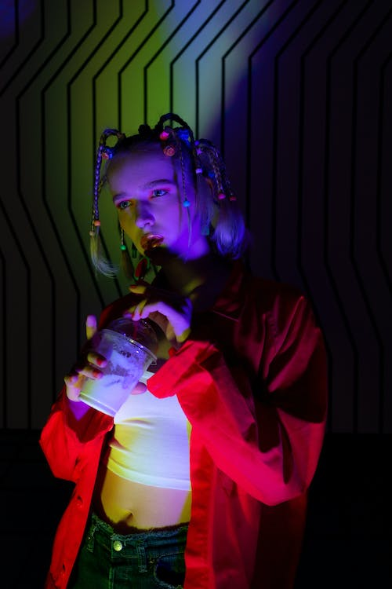
Retro nostagia can be sweet and sour at the same time. Christina helped us to make photos, that will give you this feelings.
Drop in past times with this collection of 80's styled photos.
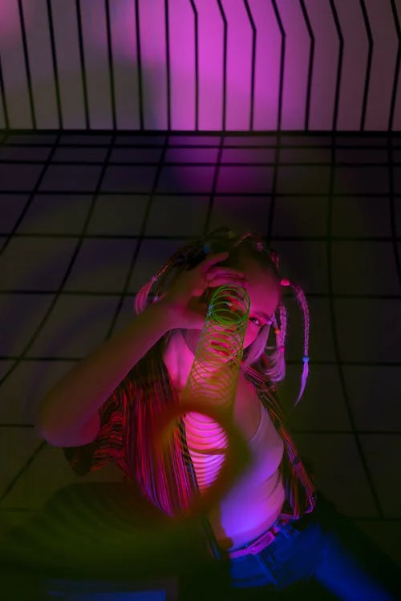
Retro nostagia can be sweet and sour at the same time. Christina helped us to make photos, that will give you this feelings.
Drop in past times with this collection of 80's styled photos.